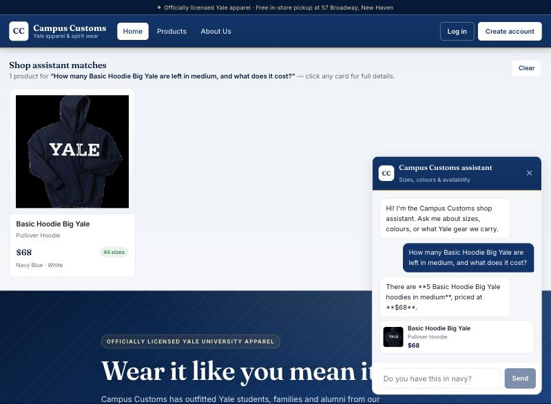
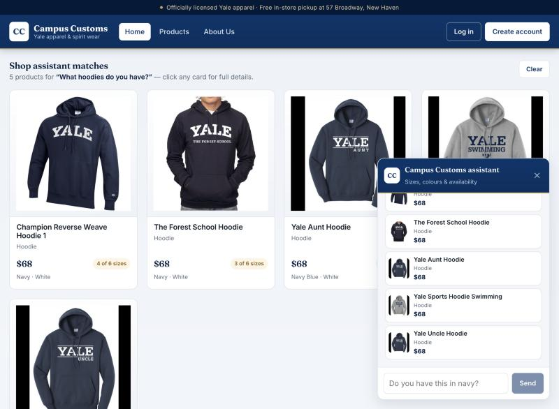
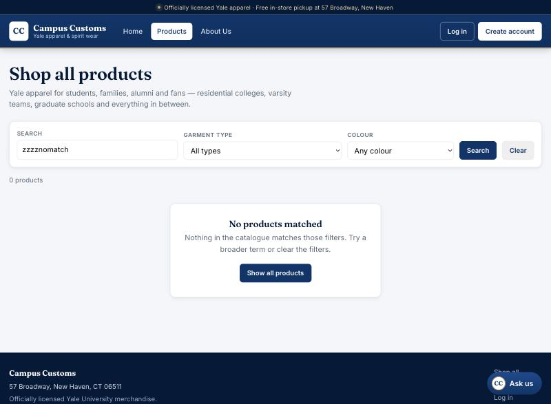

Three core features, each verified working on the live site before the screenshot was taken. Every number shown by the assistant was cross-checked against the database.
Feature 1 — Honest inventory & price
The assistant checks real stock and price from the database
This proves the chatbot reads live data: the
inventory table has exactly
5 units of that hoodie in medium and the catalogue price is $68 — the
assistant reports those, it does not invent them.

Feature 2 — Dynamic product cards
A category question renders matching products on the page
This proves the agent returns structured product matches that the frontend turns into
clickable cards — each card opens that product’s full detail page.

Feature 3 — Usability (step 9)
A real empty state instead of a blank page
This proves the loading / error / empty states added in step 9: the shopper always
gets a readable state and a way forward, which keeps them on the site.
